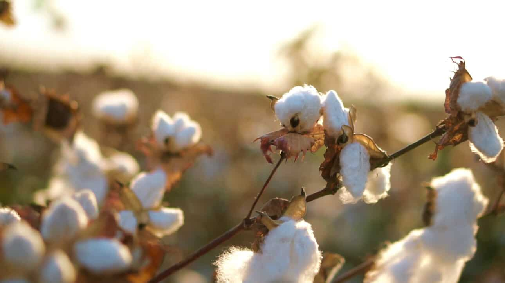
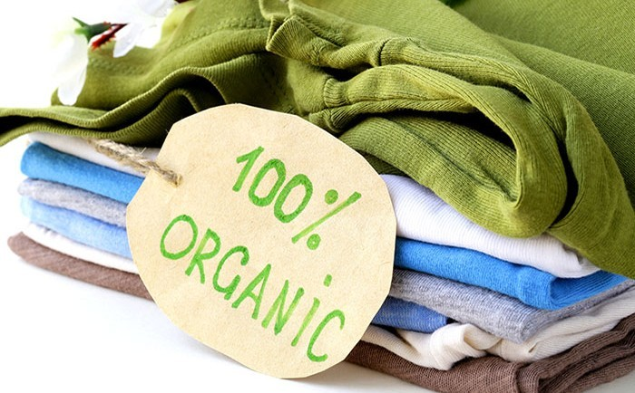

Our flagship audit, and the one most of our certified brands start with.


We trace a batch of organic cotton from the certified farm to the finished garment, checking for pesticide-free growing, low-impact dyes, and a documented chain of custody at every step. Cotton that passes carries the Ecowear material mark.
See the garments that carry this mark, and their supply chain profiles, on our Products page.
Curious how a brand applies? Register for certification.